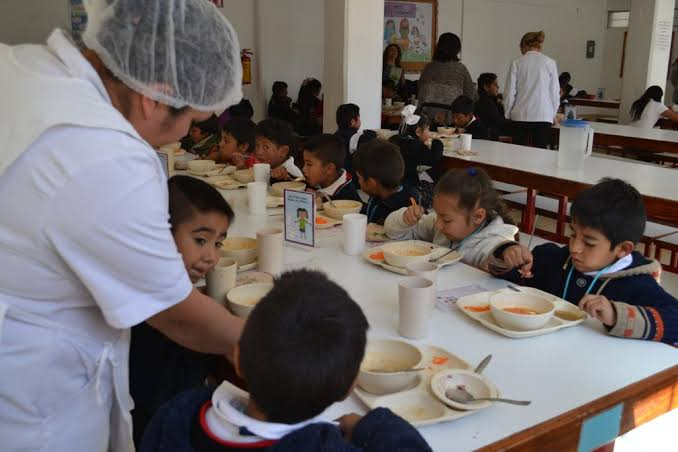

Rescatamos alimentos en buen estado que se iban a desperdiciar y los llevamos a los comedores y familias que más lo necesitan.
Trabajamos en toda la cadena: desde que rescatamos la comida hasta que llega a la mesa de una familia.
Retiramos alimentos aptos para el consumo de supermercados, verdulerías y empresas que de otra forma se descartarían.
En nuestro depósito revisamos, ordenamos y armamos los bolsones junto a cientos de voluntarios.
Entregamos los alimentos a comedores, merenderos y familias de distintos barrios cada semana.

En Argentina se desperdician toneladas de comida mientras muchas familias no llegan a cubrir sus necesidades básicas. En Mesa Abierta conectamos esas dos realidades.
Cada donación, cada hora de voluntariado y cada kilo de alimento rescatado se transforma en platos de comida reales.
Conocé nuestra historiaCon muy poco podés generar un gran impacto. Calculá cuántos platos podés ayudar a repartir.